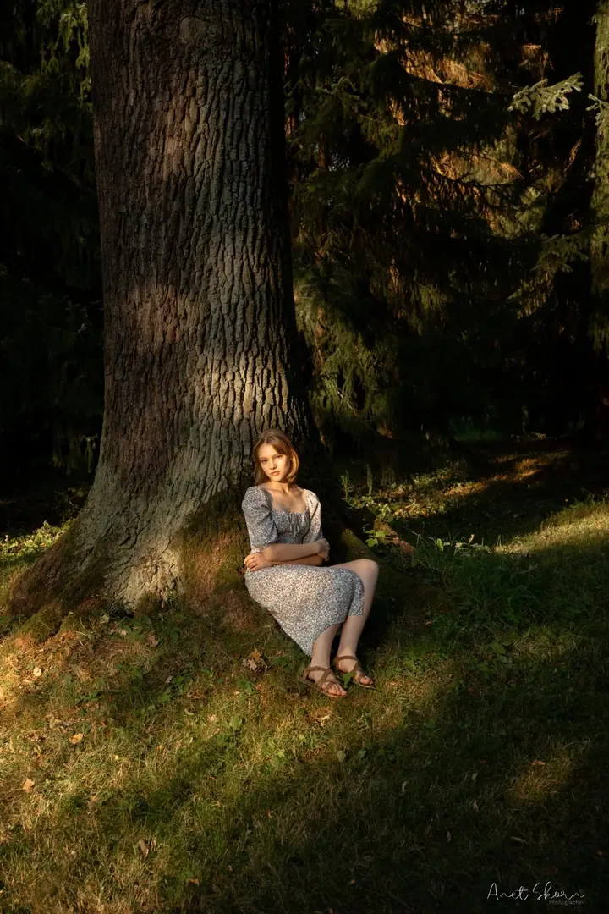

01 / 04
Portrétní focení
Přirozené portréty v přírodě nebo v městských zákoutích, kde hlavní roli hraje světlo a vaše emoce. Dostanete 20+ upravených fotek, připravených i pro vaše sítě či web.
Zeptat se na termín→


Portréty a páry ze srdce Beskyd
Zeptat se na termín →(01) Ahoj
Jmenuji se Aneta Škorňová a fotím ze srdce Beskyd . Nejčastěji portréty, páry a rodiny, ale ráda zaznamenám i společenské nebo sportovní akce . Každá fotografie vypráví příběh a já se snažím zachytit ten váš tak, aby nikdy nevybledl.
(02) Co fotím
01 / 04
Přirozené portréty v přírodě nebo v městských zákoutích, kde hlavní roli hraje světlo a vaše emoce. Dostanete 20+ upravených fotek, připravených i pro vaše sítě či web.
Zeptat se na termín→02 / 04
Žádné strojené pózy, jen čas, který strávíte spolu, třeba při západu slunce na vrcholech Beskyd nebo v uličkách Olomouce. Hodí se i jako předsvatební rande.
Zeptat se na termín→03 / 04
Koncerty, vernisáže, oslavy, plesy i sportovní závody. Za každou hodinu focení dostanete 50 až 100 fotek se základní úpravou barev a atmosféry.
Zeptat se na termín→Dále nabízím
30 až 90 minut focení venku nebo u vás doma a více než 30 upravených fotek. Ráda vám poradím, jak se barevně sladit.
↗(04) Postup
Od první zprávy po hotovou galerii.
Krok 1 z 4
Termín vybereme tak, aby vám co nejvíc vyhovoval. Řídím se počasím a světlem, nejraději fotím v podvečer, a když je potřeba, termín přizpůsobíme.
Krok 2 z 4
Nejčastěji fotím na osvědčených místech v přírodě kolem Rožnova. Pokud máte své oblíbené místo, ráda ho po domluvě předem navštívím.
Krok 3 z 4
Doporučuji jednoduché pastelové barvy bez výrazných potisků, které ladí s přírodou i ročním obdobím. Pošlu vám inspiraci z Pinterestu.
Krok 4 z 4
Upravené fotografie odevzdávám standardně do 7 dnů přes soukromou online galerii, kde si je stáhnete v plné kvalitě. Po výběru fotek vám pošlu fakturu.
Zapomeňte na strojené pózy a buďte sami sebou.
(05) Za objektivem
Focení se věnuji už od dětství. Na základní škole jsem začala chodit do fotografického kroužku a od té doby je fotografie velkou součástí mého života. V roce 2022 jsem se zúčastnila workshopů s Robertem Vanem a několika intenzivních fotografických pobytů pod vedením Petra Zatloukala.
Specializuji se na portréty a rodinné focení. Nejraději fotím v podvečer, kdy je světlo měkké a lichotivé, v přírodě kolem Rožnova pod Radhoštěm nebo v městských zákoutích Olomouce. Na focení vás nebudu stavět do strojených póz, chci, abyste se před objektivem cítili přirozeně.
Vedle studia oboru Etika a kultura v mediální komunikaci fotím i školní a sportovní akce. Dokumentovala jsem události pro ZŠ Pod Skalkou, tréninky a páskování v Jungle BJJ Frenštát a pro Action Air IPSC Vsetín klubové závody i dvakrát Mistrovství České republiky.
Aneta
Aneta Škorňová · Fotografka portrétů, párů a akcí
Portrétní focení stojí 1 900 Kč. Fotíme 30 až 60 minut a dostanete 20+ upravených fotek, všechny povedené.
V Rožnově pod Radhoštěm a blízkém okolí je doprava zdarma. Mimo Rožnov účtuji 10 Kč za kilometr. Po domluvě přijedu kamkoliv po celé republice.
Standardně do 7 dnů. Najdete je v soukromé online galerii, odkud si je stáhnete v plné kvalitě.
Surové snímky (RAW) neposkytuji. Mou vizitkou je až finálně vyladěná fotografie.
(07) Kontakt
Napište pár vět o tom, co si představujete, a termín, který se vám hodí.